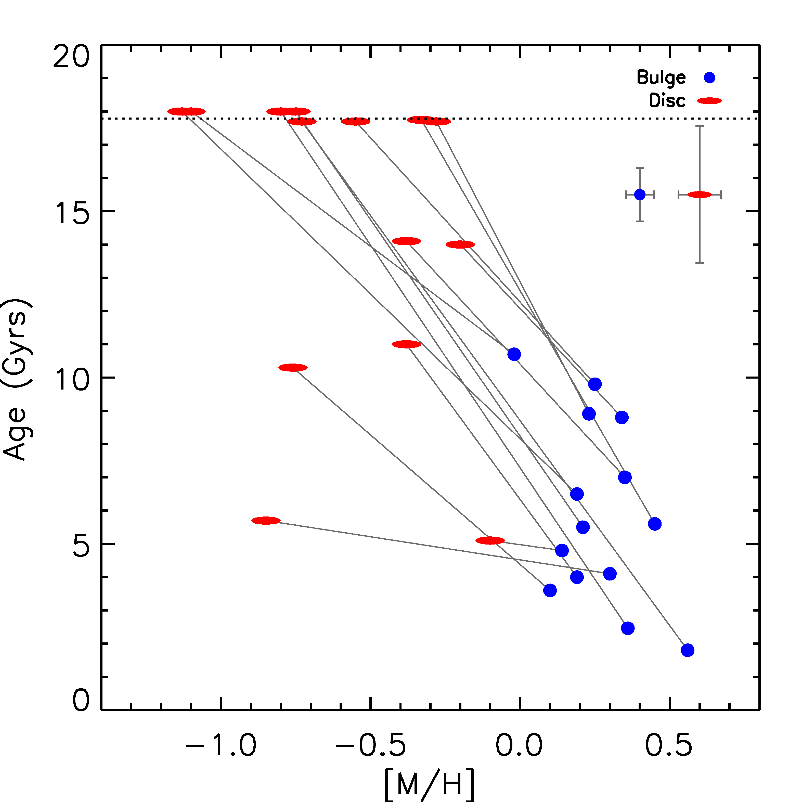
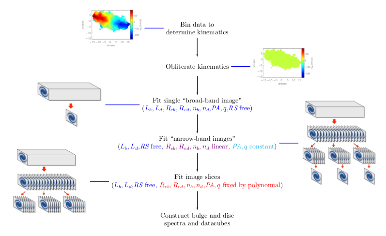

My Research
The formation of nuclei in dwarf galaxies
Clues to the formation and evolution of Nuclear Star Clusters (NSCs) lie in their stellar populations. However, these structures are often very faint compared to their host galaxy, and spectroscopic analysis of NSCs is hampered by contamination of light from the rest of the system. With the introduction of wide-field IFU spectrographs, new techniques have been developed to model the light from different components within galaxies, making it possible to cleanly extract the spectra of the NSCs and study their properties with minimal contamination from the light of the rest of the galaxy.
My first project towards in this field used a sample of 12 dwarf galaxies in the Fornax Cluster observed with MUSE. Analysis of the stellar populations and star-formation histories revealed that all the NSCs show evidence of multiple episodes of star formation, indicating that they have built up their mass further since their initial formation. The NSCs were found to have systematically lower metallicities than their host galaxies, which is consistent with a scenario for mass-assembly through mergers with infalling globular clusters, while the presence of younger stellar populations and gas emission in the core of two galaxies is indicative of in-situ star formation. We conclude that the NSCs in these dwarf galaxies likely originated as globular clusters that migrated to the core of the galaxy which have built up their mass mainly through mergers with other infalling clusters, with gas-inflow leading to in-situ star formation playing a secondary role.
This work was only the first part of broader investigation, and I will continue by studying the effect of the host galaxy mass on the NSC evolution, and aim to understand what conditions are necessary for NSCs to form, and why they are not present in some galaxies.
the evolution of S0 galaxies
My main area of research is studying the star-formation histories of bulges and discs of lenticular galaxies in nearby clusters in order to better understand their evolution and how closely related they are to spiral galaxies. There are many theories for the transition from spiral to S0, most of which focus on explanations for the truncation of star formation in these galaxies. Such ideas range from secular evolution, arising from internal processes using up all the gas necessary for star formation, to interactions with neighbouring galaxies, in which the gas is used up in a rapid starburst event, and even to interactions with the intracluster medium, which can strip the galaxy of its gas as it travels through the cluster. All of these influences would affect the bulge and disc in different ways, and we therefore aim to study these components individually for clues to the evolution of these galaxies.
As part of my PhD I developed a method to apply bulge-disc decomposition to longslit spectra of S0 galaxies, in which the two-dimensional spectrum is decomposed wavelength-by-wavelength into bulge and disc components, thus allowing separate one-dimensional spectra for each to be constructed. With these spectra we could obtain estimates of the relative ages and metallicities of the stellar populations in each component, which tells us where the most recent star formation activity occurred and for how long it went on. An example of our initial results can be seen in the plot below, where it can be seen that the bulges contain systematically younger and more metal rich stellar populations than the discs, suggesting that the final star formation episode within these galaxies occurred in the bulge. We have also been able to measure colour, age and metallicity gradients within the bulge and disk as well, which can tell us about whether the most recent star formation activity happened throughout the entire bulge or disc, or only in the central or outer regions.
However, with long-slit spectra alone we cannot determine whether these young stellar populations are distributed throughout the bulge or only in the centre of the galaxy. Similarly, with only cluster galaxies in the sample, it is uncertain to what extent environment plays a role in the young central stellar populations. Therefore, I have further developed the spectroscopic bulge-disc decomposition technique in order to apply it to IFU datacubes of a larger sample of S0s. Bulge-Disc Decomposition of IFU data, or BUDDI, is the result. BUDDI uses GALFITM, a modified form of Galfit that was developed by the MEGAMORPH team to fit multi-waveband images simultaneously, to obtain wavelength-dependent fit parameters for each component from which the decomposed spectra can be created. Since GALFITM uses the spectral and spatial information from over the whole datacube, the S/N of the data is boosted over that of any individual image. However, applying GALFITM to a datacube would prove computationally very expensive, and so BUDDI uses the following multi-step process to find the best fit to the galaxy.
The paper outlining the method used by BUDDI, the tests we carried out and some example analyses will appear on the arXiv on the 3rd November. BUDDI will be available via GitHub in the coming months. If you are interested in using BUDDI, please contact me.
NGC 4550- a galaxy with two counter-rotating stellar discs
Not all S0s formed in the same way, and so a study of their evolution must also consider the more unusual S0s with different formation histories. As part of this, I have recently been looking at NGC 4550, an unusual S0 with two extended counter-rotating stellar disks.
I have been able to decompose a high-quality long-slit spectrum of this galaxy into two counter-rotating stellar components and a gaseous component in order to study both their kinematics and stellar populations. I found that the secondary disk, which co-rotates with the gas, contains significantly younger stars and is also brighter than the primary disk, both of which suggest that this disk underwent more recent star formation. From this we were able to conclude that this glaxy formed through one of two possible scenarios- either through a carefully controlled merger of two fully-formed galaxies, in which the different ages reflect the ages of the progenitors; or through accretion of gas from an external source which settled into a disk and underwent a star formation event that produced the second stellar component.
Below is a video made by my supervisor, Professor Mike Merrifield, describing the background of this galaxy and summarising what we have found. Alternatively the video can be seen on YouTube.